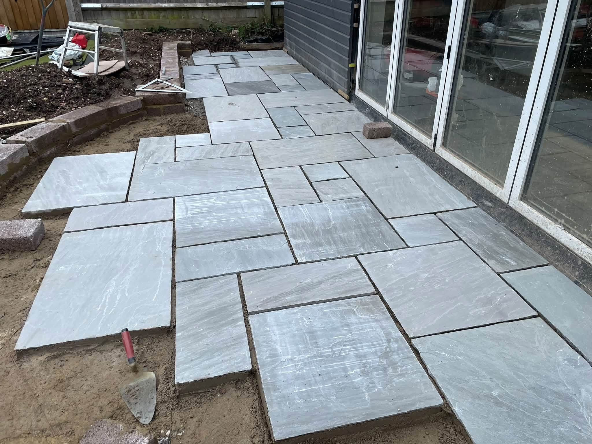
Paving & Brickwork in Newbury, Berkshire
Your home.
A fresh approach.
Berkshire Paving & Brickwork is based in Newbury, Berkshire, offering patios, driveways, brickwork and fencing. From a paved seating area to a new entrance or garden boundary, tell us what you want to improve. Browse the projects to see the materials, layouts and details, alongside work during construction.
Shape the space around your home
A patio, path or driveway has a different job to do at each property. Think about how you enter the home, where you want to sit and which routes need to remain clear. Share the features you want to keep as well as the areas you want to change.
Consider the connections between surfaces
Paving, brick edges, lawn and steps appear together throughout the project photographs. Discuss these details as part of the full job so the new work can be considered alongside existing levels, planting, access and boundaries.
Request a quote →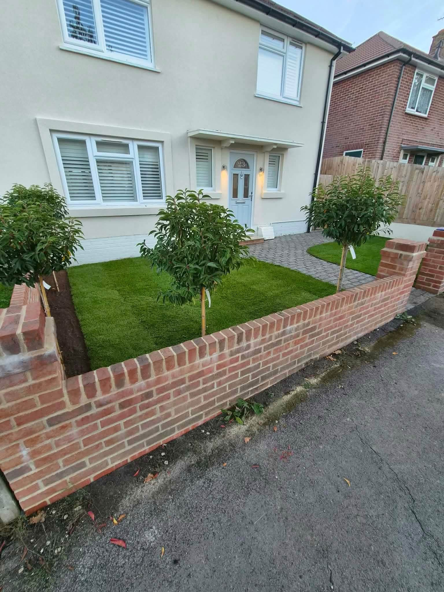
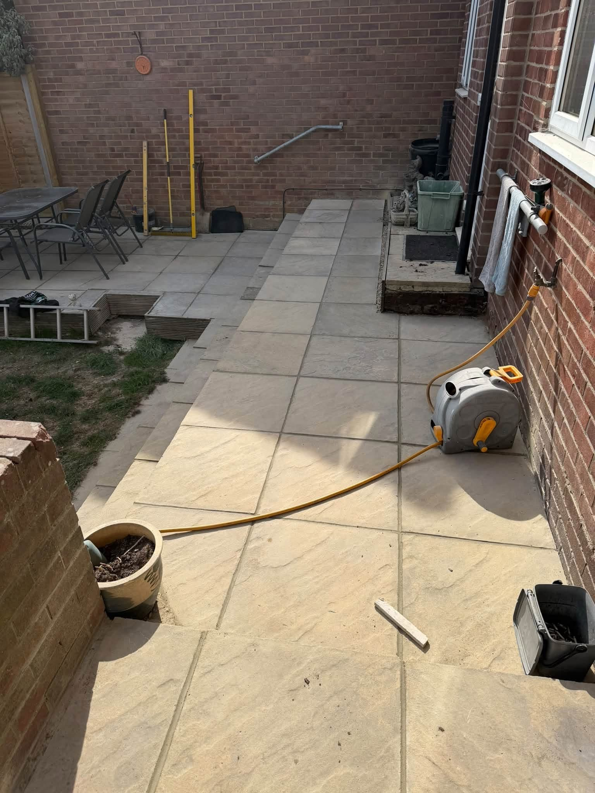
Patios & paving & Driveways & entrances
From preparation to the final details.
Explore construction stages alongside completed work, from ground preparation to the connections between paving, walls and garden spaces.
Discuss your project →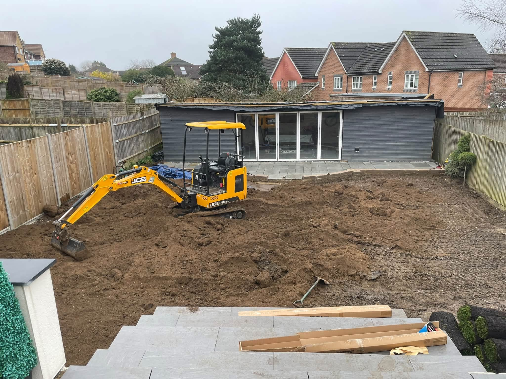
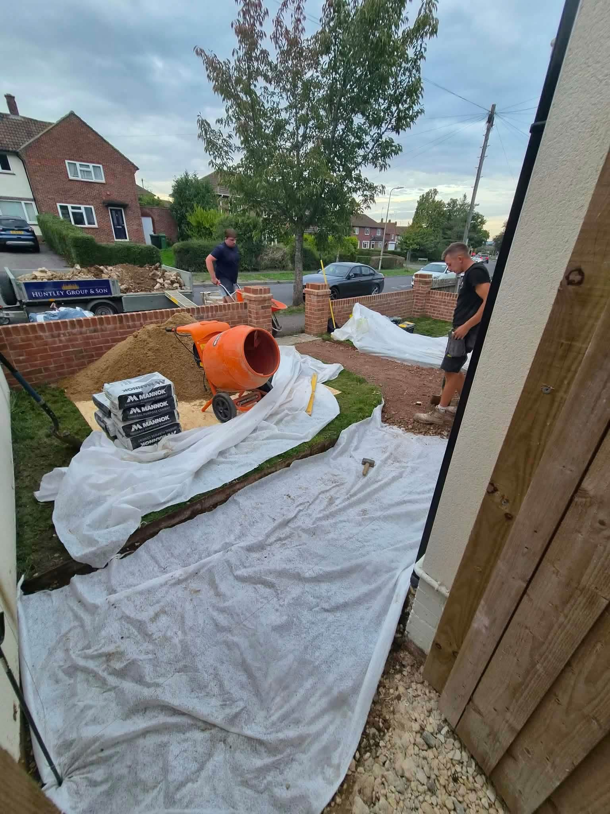
RECENT WORK
See the finished work.
A closer look at projects and work in progress.
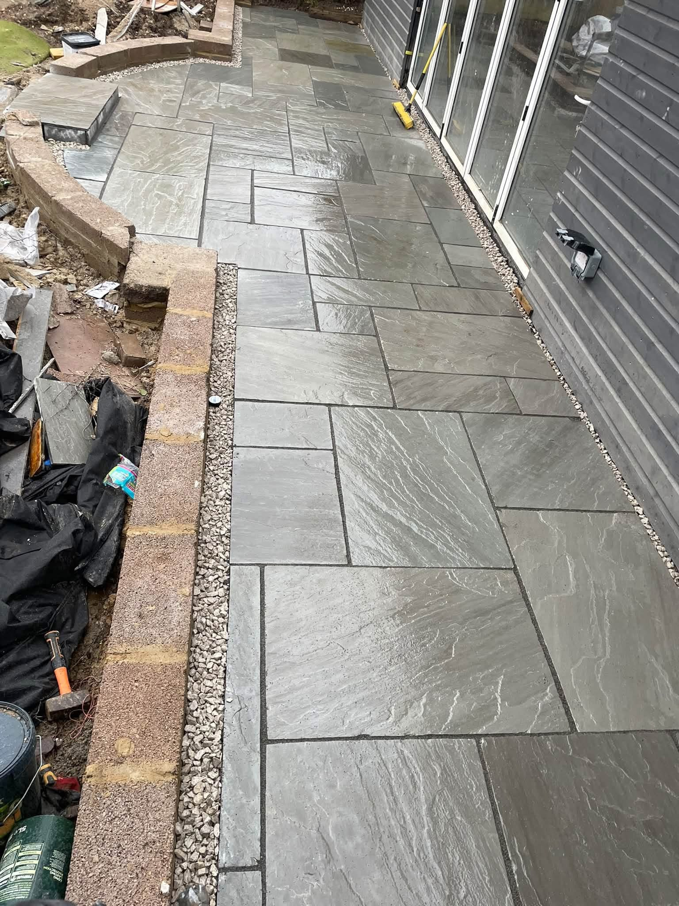
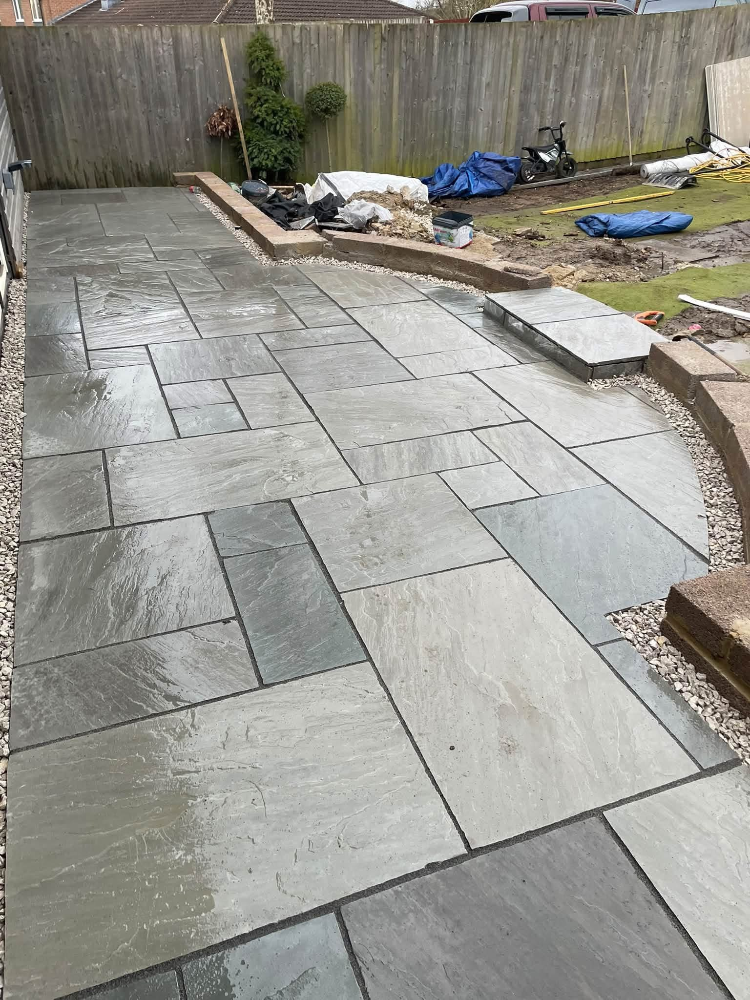
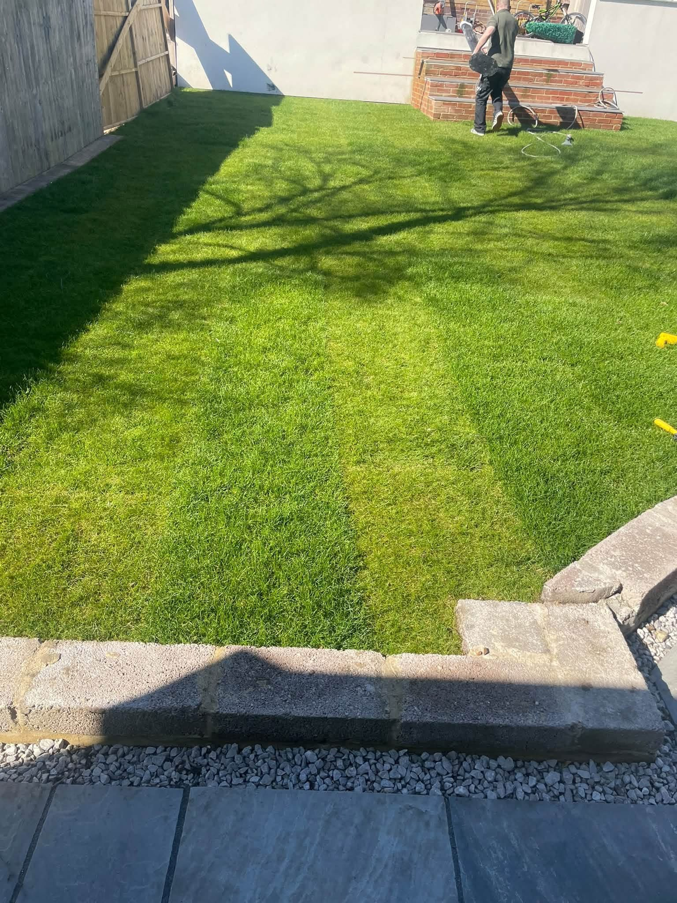
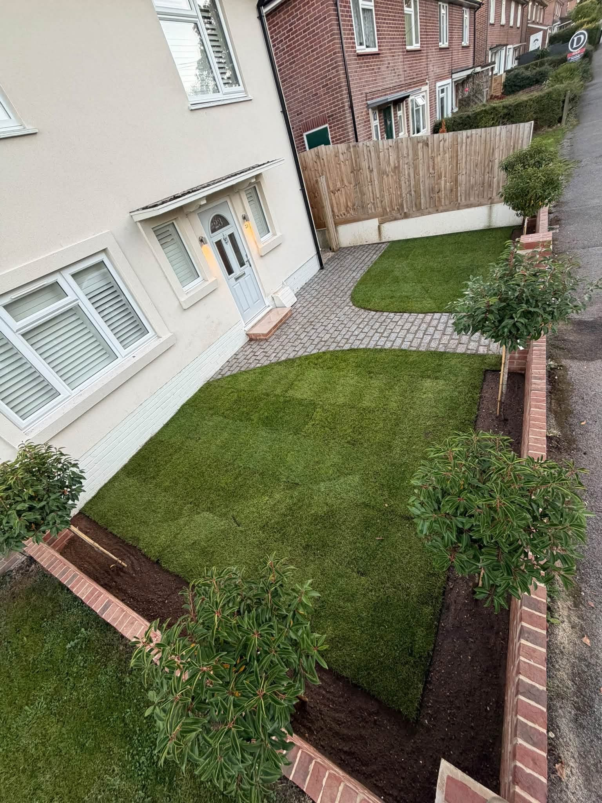
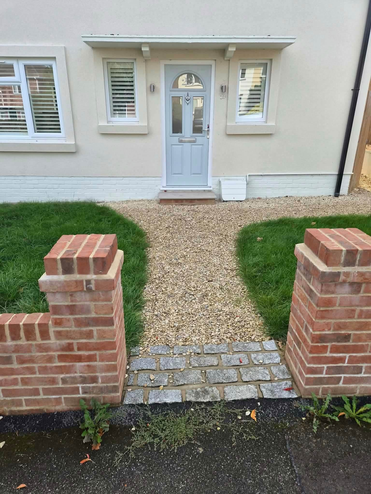
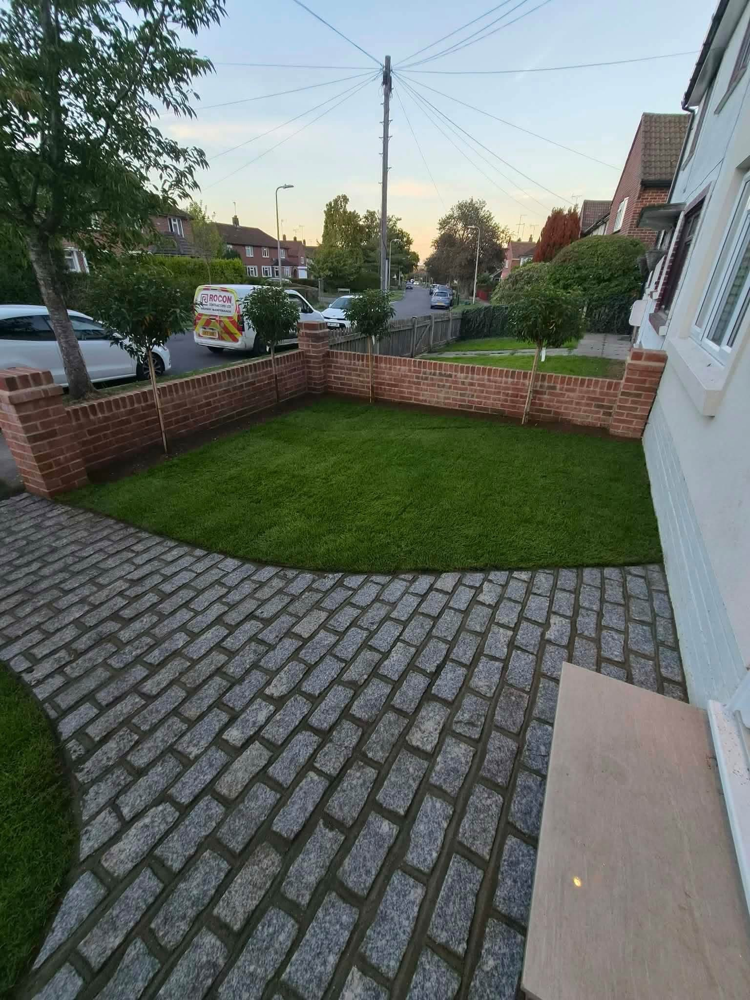
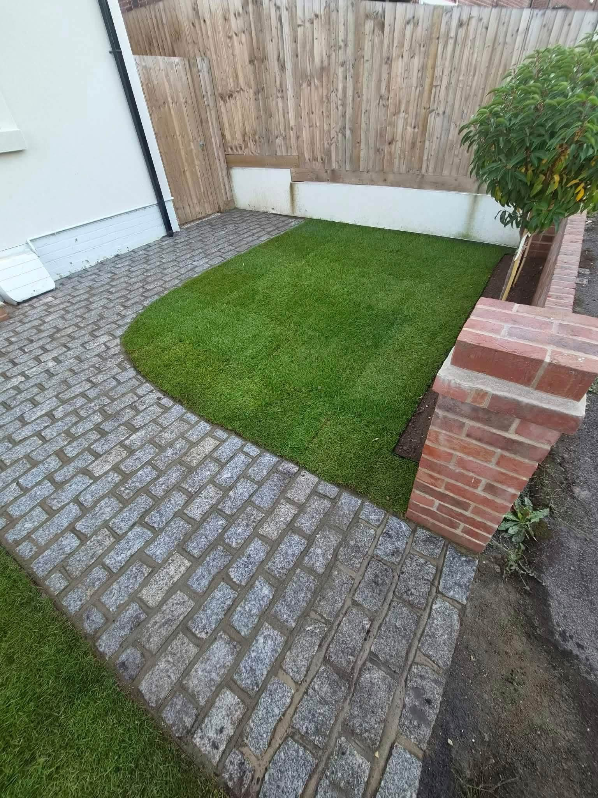
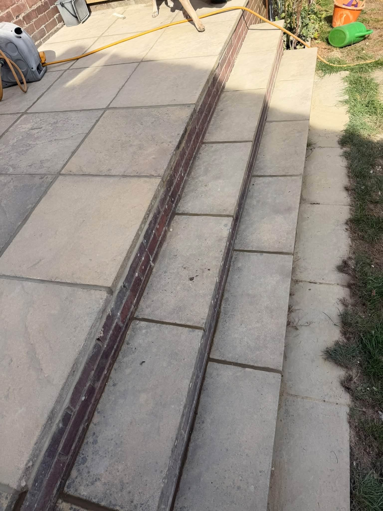
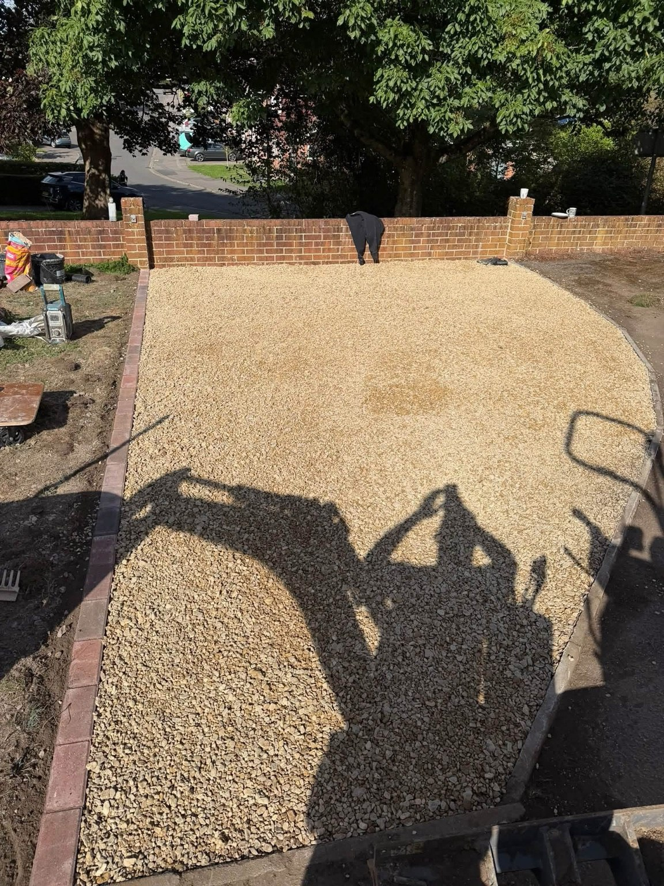
Newbury, Berkshire
Newbury based.
Direct contact.
Berkshire Paving & Brickwork is based in Newbury, Berkshire. Get in touch about a patio, driveway, brickwork or fencing project and share the changes you want to make around your home.
Include your postcode to confirm coverage and availability.
Paving, brickwork and boundaries considered as part of your project.
Call, email or share plans and photographs through WhatsApp.
GOOD TO KNOW
Your questions answered.
Where is the business based?
Berkshire Paving & Brickwork is based in Newbury, Berkshire. Include your postcode so coverage for your project can be confirmed.
What work can I enquire about?
Patios, driveways, brickwork and fencing are the listed services. Tell us which part of the property you want to improve and any related work you have in mind.
Can I send project photos?
Yes. Complete the WhatsApp form, then attach photographs in WhatsApp before sending your message.
REQUEST A QUOTE
Tell us what you have in mind.
Send the details of your project and its location. WhatsApp opens with your enquiry ready to send, where you can also attach photos.
Berkshire Paving & Brickwork
Ready to discuss your project?
Newbury, Berkshire